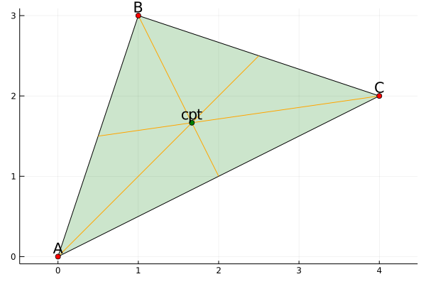
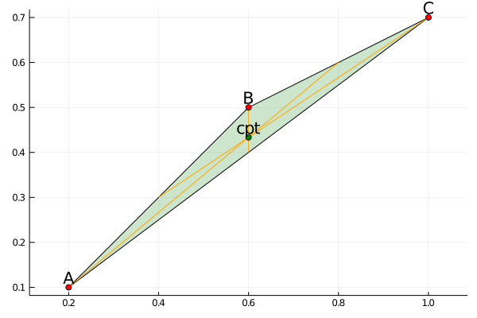
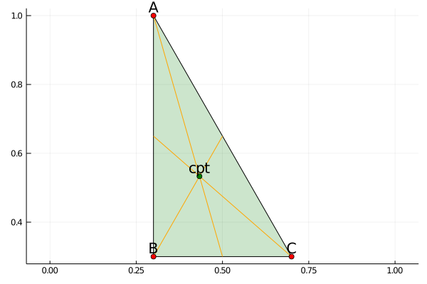

Centroid Exists Theorem
The Theorem
PlaneGeometry.Theorems.Centroid — ModuleThe centroid of a triangle is the point of intersection of its medians (the lines joining each vertex with the midpoint of the opposite side). The Centroids Exists Theorem states that the three medians indeed intersect at single point.

Finding the centroid and medians
PlaneGeometry.Theorems.Centroid.centroid — Functioncentroid(📐️)Find the centroid and the three medians of 📐️.
function centroid(tri)
medians = map(i->median(circshift(vertices(tri), i)...), 0:2)
cpt = concurrent(medians)
cpt, medians
endExamples
PlaneGeometry.Theorems.Centroid.centroid_draw — Methodcentroid_draw(📐️::Triangle)Verify Centroid Exists Theorem for the triangle 📐️.
A = Point(0,0); B = Point(1, 3); C = Point(4,2)
plt, hold = centroid_draw(A, B, C)
does_thmhold(hold)Theorem holds! 😀️PlaneGeometry.Theorems.Centroid.centroid_rand — Methodcentroid_rand()Verify Centroid Exists Theorem for a random triangle.
plt, hold = centroid_rand()
does_thmhold(hold)Theorem holds! 😀️
plt, hold = centroid_rand()
does_thmhold(hold)Theorem holds! 😀️
Proof
function centroid_proof()
@vars by cx positive=true;
@vars cy;
A = Point(0, 0); B = Point(0, by); C = Point(cx, cy);
tri = Triangle(A, B, C)
cpt, medians = centroid(tri)
cpt != nothing
enddoes_thmhold(centroid_proof())Theorem holds! 😀️